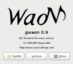
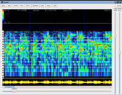
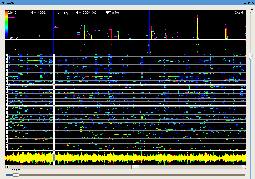
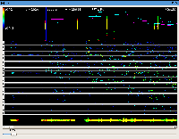
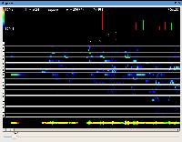
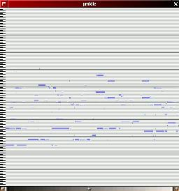

gWaoN
is a gtk+ GUI frontend for
WaoN
WaoN|
gWaoN|
pv
||Download
News|
gWaoN?|
Screenshot|
Download|
Install|
Instructions|
ToDo|
History
What's new?
What is gWaoN?
gWaoN is intended to be a gtk+ GUI frontend for
WaoN (for a long long time).
Right now, gWaoN can do the following:
- read an audio file (wav or flac) and analyze its spectrogram.
- play the file through libao.
- change the playback speed and pitch by phase vocoder in real-time!
November 4, 2007 (Release 0.9)
|

|

|
|
About window.
|
Analyze window.
|
February 16, 2007 (Release 0.5)

0.5 Release.
The vertical scale controls playback tempo.
February 10, 2007

|

|

|
|
1)
Spectrogram by plain FFT.
|
2)
Fine spectrogram with the Phase-Vocoder corrections.
|
3)
Averaged spectrogram with the Phase-Vocoder corrections.
|
Very Old Screenshot

not functional, just an image.
gWaoN is included since Release 0.4.
Please visit File Releases @ SF.
Or you can get directory from
CVS Repository.
To install the program "gwaon",
- take a look at "Makefile" and edit it if necessary.
- invoke "make gwaon", for example.
- you'll see an excutable "gwaon". copy it wherever you want.
- install man page "gwaon.1".
library
To build "gwaon", you need the following libraries:
Instructions
Here's a brief instruction to play.
- 1) load sound file (wav or flac, thanks to
libsndfile.).
then, you'll get the big window
- 2) adjust the right position you want by the scale and scroller
at the bottom.
- 3) click the left button at some place to mark the position.
the power and phase spectrum at that point is shown upper two panels.
- 4) play chaning some parameters.
right now there are following key-bindings
(if the key is not working, try typing TAB to focus the main window
-- sorry but I do not know how to fix it):
- SPC : play/stop
- p, P : change analysis mode.
- w, W : change the window function.
- Right, Left : change the FFT size by factor 2.
- Q, q : toggle PV mode (no phase lock/loose phase lock)
- h, H : change hop size for the Phase-Vocoder correction.
- o, O : change the upper octave limit.
- l, L : change the lower octave limit.
- Up, Down : change the upper limit for the power spectrum
- PageUp, PageDown : change the lower limit for the power spectrum
- 5) change the tempo and pitch by the vertical scales in the right
during the audio playback. you can play backward!
ToDo List
- add toggle for grid on/off
- reconsider key-bindings
- add a display mode to see the octave structure
for the spectrum-phase panel rotating 90-degree
- conversion from WAV to MIDI (using WaoN function)
- play-back function for the MIDI output
- simple MIDI editor
- etc...
History
- Feb 24, 2007 :
- waon-0.6 released!
- loop-play, play-position indicator, loose phase lock PV.
- Feb 19, 2007 :
- use libao instead of
esd
for audio output.
- Feb 16, 2007 :
- waon-0.5 released!
- audio-playback and real-time tempo-change (without pitch shift)
functions are implemented!
- Feb 10, 2007 : coming back!
- Jan 10, 1999 : start this page.
News|
gWaoN?|
Screenshot|
Download|
Install|
Instructions|
ToDo|
History
WaoN|
gWaoN|
pv
||Download
{kind=link}
{kind=link}
{kind=link}

{kind=link}
{kind=link}
{kind=link}